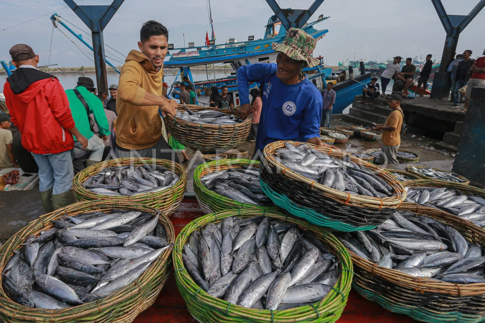

Wisata Pantai & Sunset
Keindahan sunset menjadi daya tarik utama bagi wisatawan yang mencari ketenangan di tepi pantai.
Pesona Pantai Alami dengan Keindahan Laut dan Wisata Bahari yang Memukau
Keindahan sunset menjadi daya tarik utama bagi wisatawan yang mencari ketenangan di tepi pantai.

Ikan, udang, dan cumi segar tangkapan nelayan lokal yang menjadi primadona kuliner desa kami.

Nikmati snorkeling, jetski, dan berbagai wahana air menarik di ekosistem laut yang masih terjaga.
Desa Pasir Biru merupakan desa pesisir yang terletak di Lampung Selatan. Kami berkomitmen menjaga kelestarian alam sambil memajukan ekonomi masyarakat melalui pariwisata berkelanjutan.
Spot Wisata
UMKM Lokal
Pengunjung / Tahun


"Pantainya sangat bersih dan tenang. Sunset di Desa Pasir Biru benar-benar magis. Sangat direkomendasikan!"
"Seafood bakar di sini paling enak dan segar yang pernah saya coba. Harganya juga sangat terjangkau."
0812-3456-7890
@desapasirbiru
Panengahan, Lampung Selatan